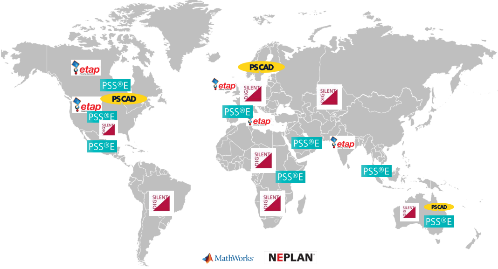

| Name | Positive-sequence Dynamic Simulation | Electromagnetic Transient Simulation | Owner |
|---|---|---|---|
| PSS®E | ✓ | ❌ | Siemens |
| PSLF | ✓ | ❌ | GE |
| PowerFactory | ✓ | ✓ | DIgSILENT |
| ETAP | ❌ | ✓ | Schneider |
| PSCAD | ❌ | ✓ | Manitoba Hydro International Ltd. |
Grid Code, IBR Simulation Software, Modeling, Verification, and Validation
MOD
Model
PSS/E
PSCAD
Electromagnetic
Positive Sequence
Inverter
Electranix
NERC MOD Standards, modeling procedures from ISOs and industries.
NERC Reliability Standards on Modeling and Simulations
Regarding power system modeling and simulation, the North American Electric Reliability Corporation (NERC) created the MOD (Modeling, Data, and Analysis) standard series to ensure the reliability and stability of the bulk power system (BPS) in North America. The MOD standards provide guidelines for developing and validating models of the power system. Accurate models are essential for understanding how the system will behave under various conditions and for identifying potential problems before they occur. A good introduction to MOD standards on Inverter-Based Resources (IBR) can be found on this page. MOD standards ask for models in PSS®E or PSLF, which are for positive sequence Phasor-based analysis. Currently, electromagnetic transient program (EMPT) modeling is not required in NERC MOD standards. However, NERC published this white paper in March 2023 points out that “conventional fundamental frequency, positive-sequence dynamic simulation tools used Transmission Planners and Planning Coordinators for many years are inadequate for effectively identifying reliability risks of inverter-based resources in some ways. Electromagnetic transient simulations are necessary to adequately identify and mitigate Bulk Power System reliability risks moving forward.”
PSS®E vs. PSCAD
PSS®E and PSCAD represent two kinds of power system simulation software. The former is for positive-sequence simulation operating in the Root Mean square (RMS) domain, and the latter is for Electromagnetic Transient (EMT) simulation. As shown in Table 1 there are popular commercial packages for the aforementioned two kinds of simulations.
Figure 1 is from ABB Grid Code Compliance which shows the market leader in different regions around the world. There are also, a lot of open source simulation packages out there.

Inverter EMT Stuidies
The NERC white paper emphasizes that “the need for EMT studies to assess BPS reliability is expected to grow exponentially in the coming years based on planned projects in the interconnection queues. Industry will need to act quickly to develop the skills, processes, tools, infrastructure, and capabilities to perform these studies effectively and efficiently.”
Projects in the queue are mainly solar and Battery Energy Storage Systems. (BESS) Here is a list of studies that need EMT simulation:
- Inverter weak grid integration
- Sub-synchronous control interaction
- Controls interactions between inverters
- Inverter ride-through performance evaluation
- Inverter short-circuit current analysis
- Power quality studies
- Black start studies
- IEEE 2800-2022 performance compliance
EMTP/PSCAD modeling guideline
ERCOT Dynamics Working Group Procedure Manual gives a detailed guide on what and how the inverter PSCAD model should be build, tested and validated.
Electranix also publish PSCAD Requirements which are well accepted by NERC in the North America region.